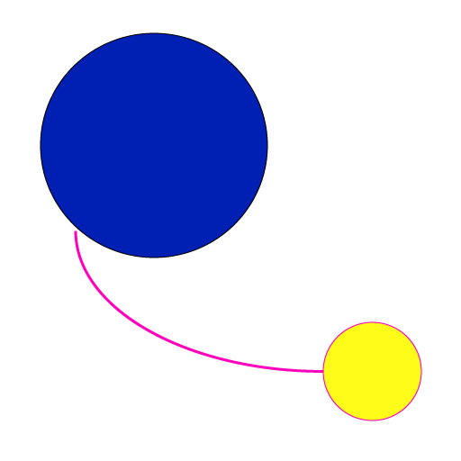

Web Shortcut

If you use this app, you can do "Add to Home Screen" like a iphone's safari in your Mac.
You accsess your favorite web site easily.
How To Use
- Install Web Shortcut
- Fill a url of shortcut you want to create and enter OK.

- Then, app fill a name and set an icon automatically.

- Enter Create button.
- If you enter Create button, you choose a path where you save a file.

- Enter the file and open a link.

- If you push Reset button, delete all items.
- Icon is use a web site's favicon by default. If you want set anther image, you drag and drop a image your choose.